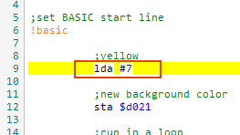
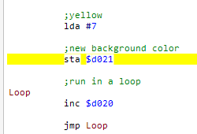
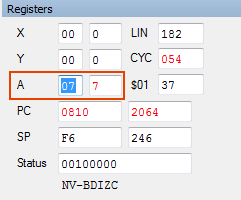

From the open file dialog enter the "Sample Projects" folder and choose "Sample Project 6 - Debugging.s64" and press "OK".

Place the cursor on the marked line via mouse or keyboard.

Either use the short key for "Run to Cursor" or right click at the line and choose "Run to cursor" from the context menu. You should see VICE opening your file followed by C64 Studio getting focus after a moment.
If VICE doesn't open make sure it is properly setup in File -> Preferences -> Tools.


C64 Studio should now highlight the previously chosen line with a yellow background. This is where the C64's processor is currently executing code. The highlight marks the next line to be executed.
Looking at the "Registers" view shows the current registers and a few crucial values of the current C64 instance. Note that the accumulator A contains the value zero.

Now press the short cut key for "Debug Step" or push the corresponding button on the toolbar.

C64 Studio will highlight the next instruction and the register view will update its values.
Note how A now contains the value 7 as per the LDA instruction before

Use the "Stop Debugging" short cut key or push the corresponding button on the toolbar.
Note that with VICE 2.4 you should always stop debugging via C64 Studio. Unfortunately VICE 2.4 does not respond to clicks or key presses when the debug mode is active.